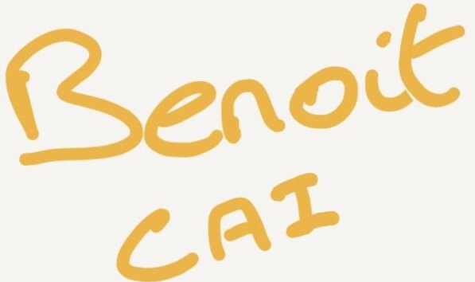

À propos de moi :
Jeune étudiant français en Génie Informatique à l'UTC, passionné par les nouvelles technologies et les systèmes embarqués.
Curieux, déterminé et motivé : ce sont sans doute les mots qui me décrivent le mieux.
Curieux, car depuis tout petit je me pose des questions comme : comment fonctionne un ordinateur ? Qu'y a-t-il à l'intérieur ?
Cette curiosité, je l'applique aujourd'hui à l'intelligence artificielle et au Machine Learning, des domaines que j'explore en autodidacte.
Déterminé, car je viens d'une famille où les études n'allaient pas de soi. Mes parents m'ont poussé à en faire, pour m'éviter un parcours aussi difficile que le leur, et c'est cette même détermination qui me pousse aujourd'hui à toujours aller plus loin.
Motivé, car j'ai toujours travaillé en parallèle de mes études, dans le restaurant familial. J'y ai appris la rigueur, le travail sous pression et le sens du contact, des qualités que je retrouve aujourd'hui en gestion de projet et en travail d'équipe.
📓 J'effectue actuellement mon cycle ingénieur à l'Université de Technologie de Compiègne, spécialisation Génie Informatique, axée sur les systèmes embarqués.
Auparavant : première année de licence (portail IEEEA) puis deuxième année (EEEA) à l'Université de Rouen Normandie, avant de rejoindre l'UTC.
Voici mes réseaux :